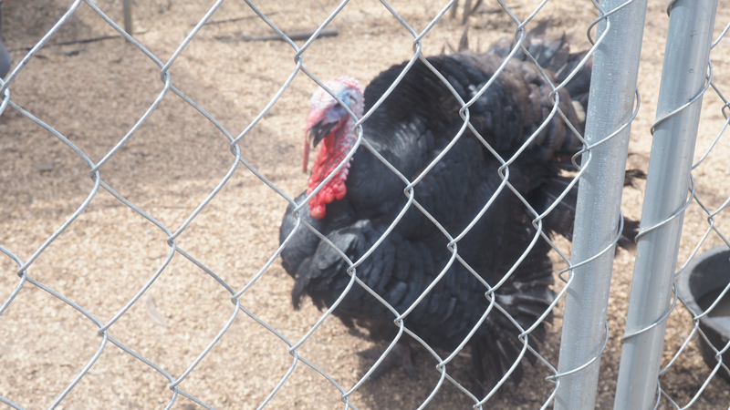
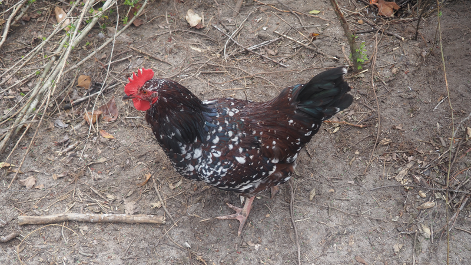
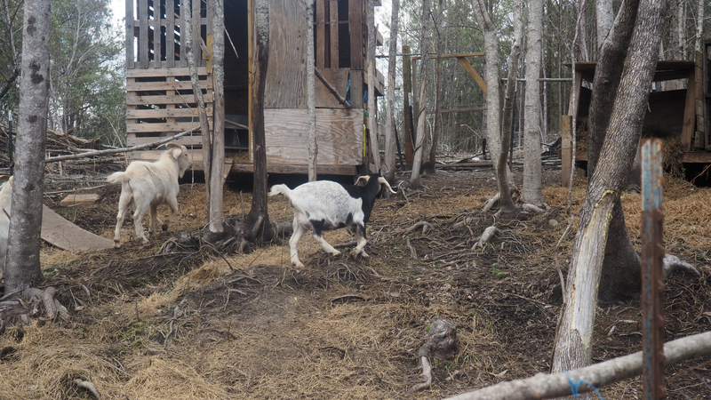
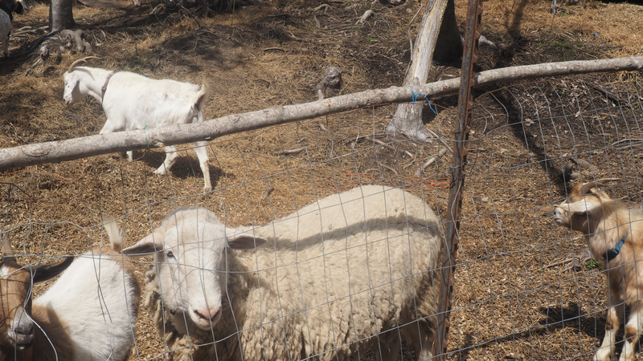

Our Story

JAM Mission began with a simple calling: to steward the land God entrusted to us and share it with others. Nestled on 16 beautiful acres in Tuskegee, Alabama, our farm is a place where faith, nature, and community come together. What started as a personal journey toward sustainable, off-grid living has grown into a ministry that serves families, schools, churches, and individuals seeking connection, healing, and peace.
Who We Are
We are a faith-based family farm rooted in biblical principles of stewardship, hospitality, and love for creation. Our name reflects our commitment to walking the narrow road—choosing purpose over comfort, service over self, and faith over fear. Every animal we raise, every garden we tend, and every guest we welcome is part of that mission.
What We Offer



From our mobile petting zoo that brings the farm to your doorstep, to peaceful campsites beside creeks and ponds, to healing animal and horticulture therapy sessions—JAM Mission offers experiences that reconnect people with the land, with animals, and with each other. We also offer farm tours, RV stays, workshops on everything from sustainable farming to herbal medicine, and farm-fresh products like eggs, chicks, and essential oils.
Our Land


Our 16-acre property features rolling pastures, wooded areas, a serene pond, bubbling creeks, and shady groves. It's home to goats, sheep, chickens, turkeys, geese, guinea fowl, and a whole lot of heart. Every corner of this land has been shaped with intention—to provide sanctuary for animals, nourishment for people, and glory to God.
Come Visit
Whether you're looking for a weekend getaway, a place to host a celebration, a therapeutic experience, or simply want to pick up some fresh eggs—you are welcome at JAM Mission. We believe everyone deserves a chance to slow down, touch the earth, and remember what life feels like when you walk the narrow road.